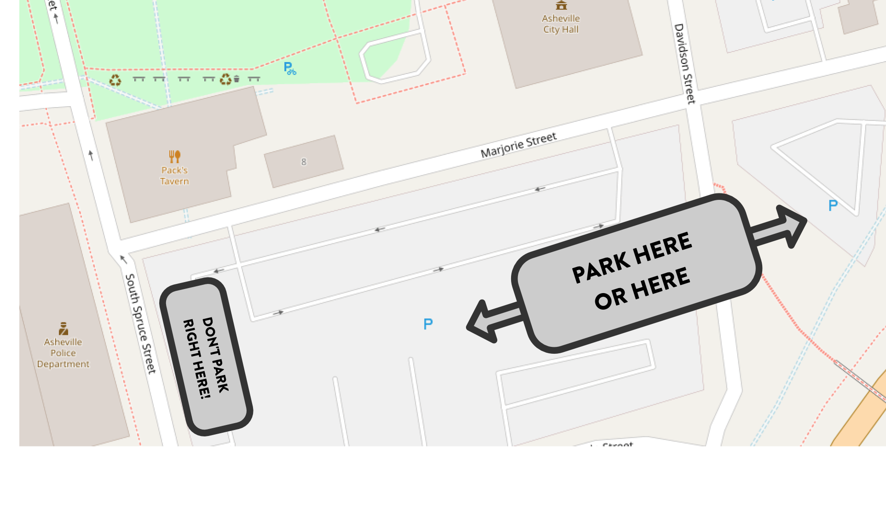

Make Your Voice Heard! Asheville City Council Public Comment Info
Delivering a public comment to Asheville City Council is one of the best ways to make your voice heard when it comes Asheville’s housing issues.
But if you’ve never done it, it can be a little intimidating. Here’s some information that we think will be useful.
Got questions? Or suggestions for this page? Please send us a line!
Getting the Info
Planning to speak on an issue? You’ll want to check the Asheville City Council website here to make sure that you’ve got the right date, or that the agenda hasn’t changed last minute.
Planning What to Say
You should speak from the heart—say what you want to say!
That said, here’s some tips to think about:
- You definitely don’t need to fill up the full three minutes that you are allowed.
- Personal stories are always effective. If you don’t have a story to tell about yourself, you might have one to tell about a friend or a relative.
- Try to balance negative sentiment (“there’s a housing shortage! 😱”) with positive sentiment. (Things that you love about your neighborhood, a prior neighborhood you lived in, or about multifamily housing in general; or what lower housing costs might mean for you or others.)
- If other speakers are speaking against what you are talking about, weigh carefully whether or not you want to respond to their talking points. Sometimes it’s better not to!
You may choose to read from pre-written comments—either on your phone, tablet, or paper—and that’s totally fine.
Getting to the City Council Meeting
City Council meets on the second floor of City Hall.
Free parking is available in two of the city staff lots just south of City Hall, starting at 4:30pm the day of each meeting.

If the night’s agenda brings a high turnout, you may need to park somewhere else. The Buncombe County garage on the north side of College Street is a safe bet if you don’t want to circle the blocks looking for street spots.
When to Arrive?
City council meetings start at 5pm, but you don’t necessarily need to be there when the meeting begins. In fact, if the agenda is particularly long that night, and the agenda item that you’re interested in is further down, you might choose to get there late on purpose.
(It’s best to lean on getting there with plenty of time. The more familiar you become with how the meetings go, the more comfortable you may get with arriving a little later.)
Note that getting there early does have one benefit: if an item is likely to get a lot of commenters, getting there early will ensure that you will be called to speak.
Arriving at City Council
When you enter the building, you’ll need to go through a metal detector. (You can keep your shoes and belt on!)
After that, you’ll take the elevator up to the second floor.
There will be someone in the hallway to add you to the list of speakers. You just need to tell them on which item you are speaking.
(If you plan on speaking on an item that is not on the agenda for that meeting, that just means you’ll speak at the end of the meeting during the general open “public comment” period.)
Being Called to Speak
Your name will be called when it’s time for you to speak. Be polite. Try not to yell! Thank the council at the end of your comment.
Note that council will never ask you questions! No other commenter is allowed to ask questions of you either. That’s not what this process is about. It’s about letting you share what’s on your mind.